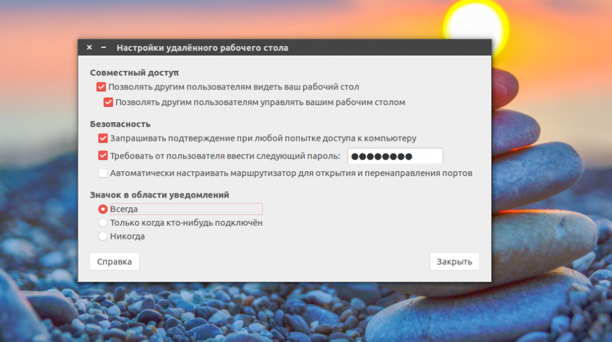
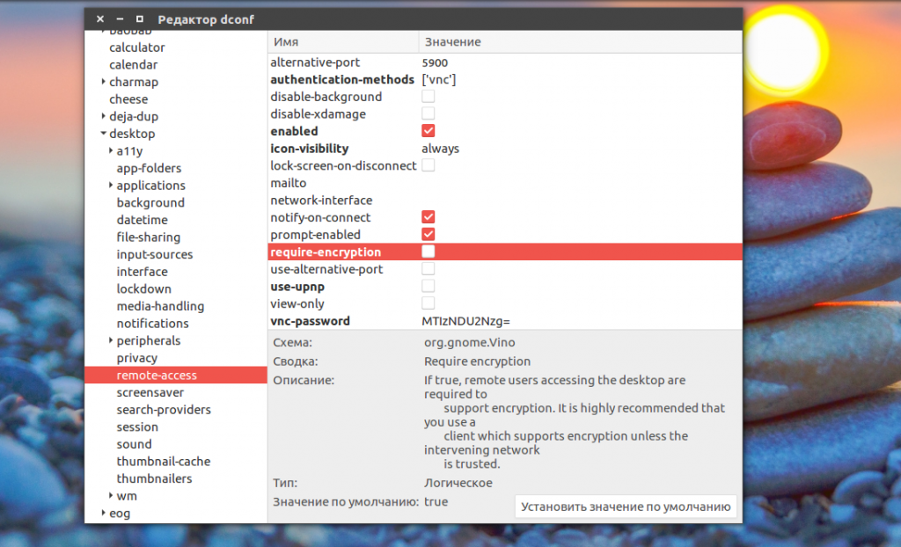
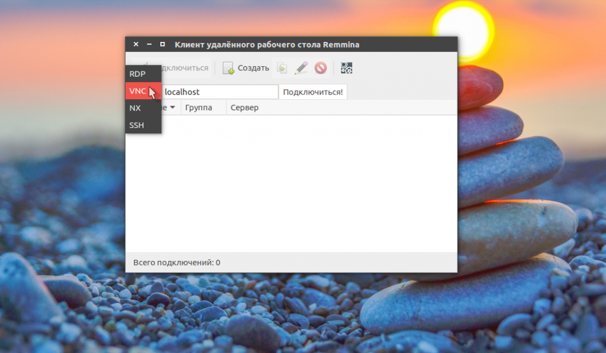
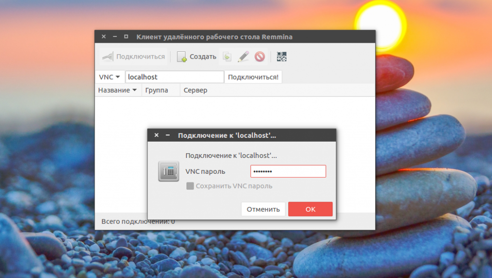
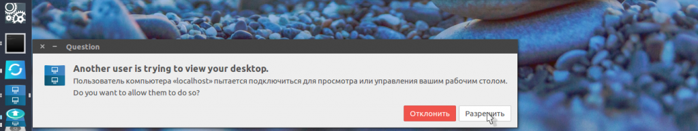

Удаленный рабочий стол ubuntu 16.04
Инструкции Январь 24, 2017 11 admin
Удаленный рабочий стол позволяет подключиться к вашему компьютеру через интернет с помощью другого компьютера или даже смартфона. Вам может достаточно часто понадобится сделать что-то на другом компьютере, даже если вы не рядом с ним. Такая возможность есть и у Ubuntu.
В этой статье мы рассмотрим как настроить удаленный рабочий стол Ubuntu 16.04, а также как подключиться к нему с помощью различных устройств. В качестве протокола удаленного доступа мы будем использовать VNC, он медленный и уже устаревший, но зато везде поддерживается. В Ubuntu 16.04 все почти все программное обеспечение уже установлено по умолчанию, вам остается только изменить несколько настроек.
Удаленный рабочий стол Ubuntu
Как я уже сказал, в качестве протокола удаленного доступа мы будем применять VNC. А в качестве сервера - Vino, эта программа поставляется по умолчанию вместе с дистрибутивом. И вам останется внести только несколько настроек для ее работы.
Откройте главное меню Dash и наберите в поиске Desktop Sharing.
Если система ничего не обнаружит, это частый баг. Вы можете запустить утилиту через терминал. Для этого откройте терминал с помощью Ctrl+Alt+T и выполните:
vino-preferences
Дальше, в открывшемся окне установите галочку "Позволить другим пользователям видеть ваш рабочий стол" Затем напротив поля "Требовать пароль" введите пароль, который будет использоваться для подключения:

Здесь все, удаленный рабочий стол ubuntu настроен. И уже сейчас вы можете пытаться подключиться к вашему компьютеру с помощью другого дистрибутива Linux. Но есть еще один момент. Вы не сможете подключиться из Windows. По умолчанию включено обязательное шифрование. А это поддерживается не всеми клиентами. Чтобы отключить принудительное шифрование нужно установить dconf-editor:
sudo apt install dconf-editor
Затем откройте программу и перейдите по пути org.gnome.desktop.remote-desktop там снимите галочку из пункта:

Теперь вы готовы тестировать подключение к удаленному рабочему столу ubuntu. Откройте главное меню и найдите клиент удаленного подключения Remmina.
В строке подключения выберите протокол VNC, затем введите адрес, поскольку мы собрались проверять на локальной машине, то введите localhost, в других же случаях вам придется использовать ip адрес компьютера. Дальше нажмите "Подключиться":

Сразу же программа спросит у вас пароль чтобы получить удаленный доступ к компьютеру:

А затем уже в системе VNC сервер спросит нужно ли разрешить подключение к удаленному рабочему столу ubuntu 16.04 этому клиенту:

После того как вы одобрите подключение, можете пользоваться удаленным рабочим столом. Теперь самое время подключаться из другого компьютера. Вы можете использовать любой VNC клиент для Linux, Windows или Android и подключиться к своему компьютеру если он находится в локальной сети. Кроме того, вы можете получить к нему доступ даже через интернет создав частную локальную сеть, например, с помощью hamachi или OpenVPN.
Выводы
В этой статье мы рассмотрели как выполняется настройка удаленного рабочего стола Ubuntu 16.04, а также как получить к нему доступ с помощью других устройств. Все очень просто, даже проще, чем с тем же x11vnc, для которого нужно создать несколько конфигурационных файлов. Если у вас остались вопросы, спрашивайте в комментариях!